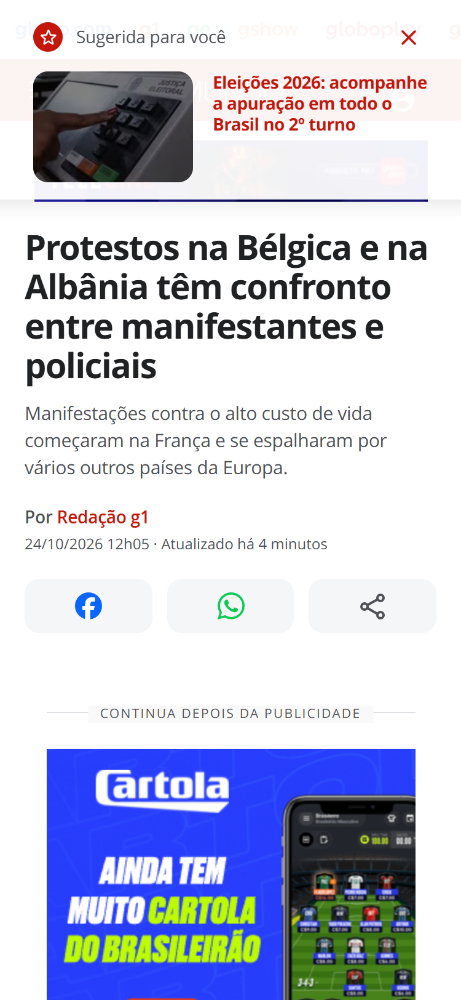
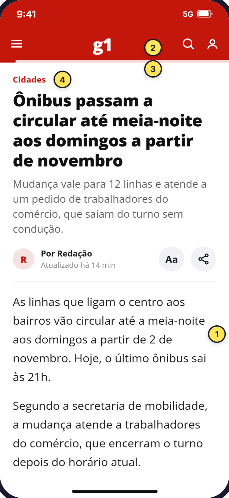
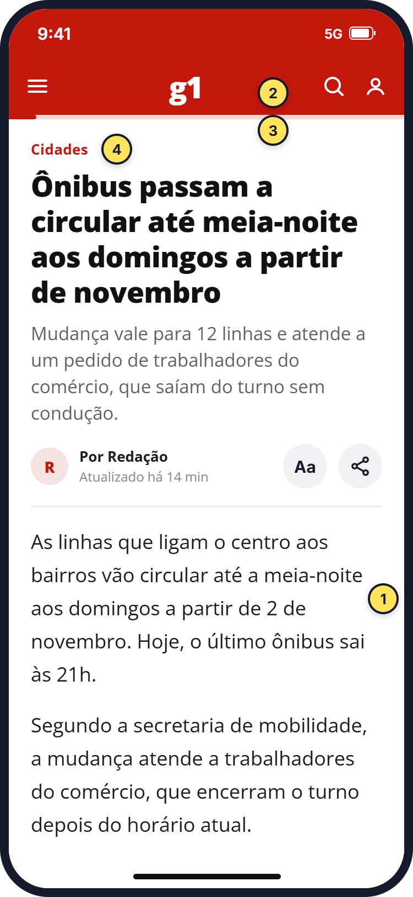
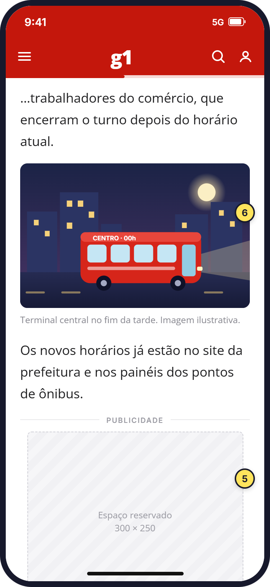
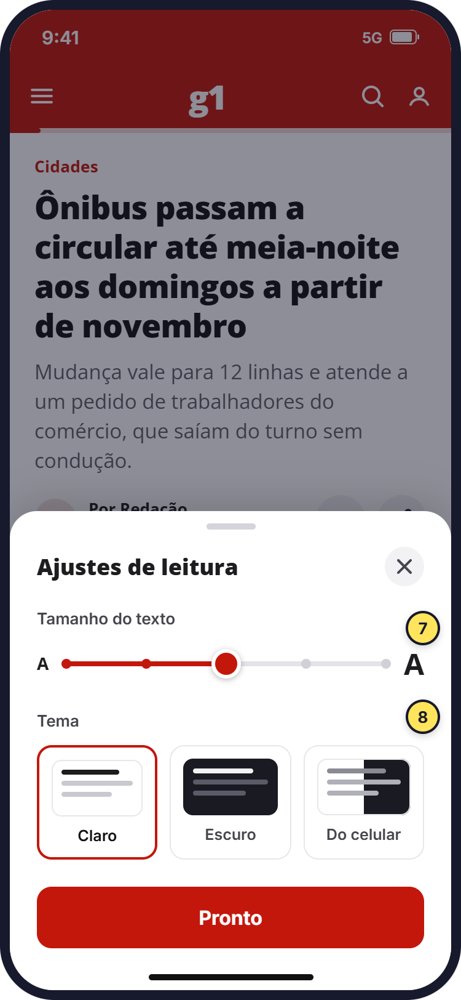
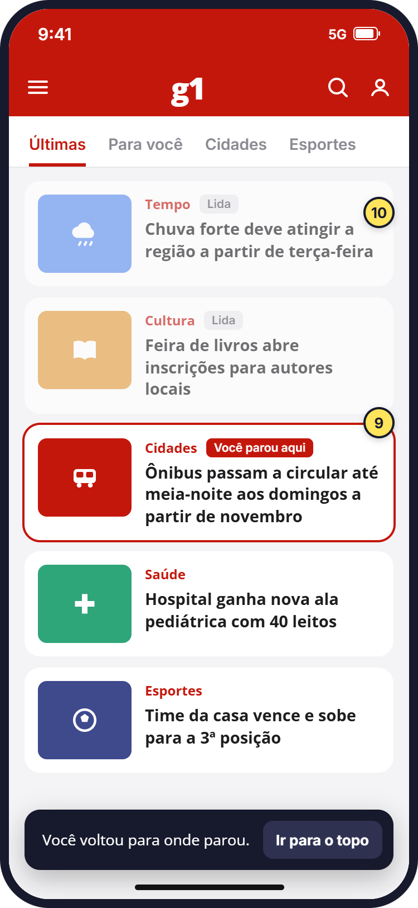

30-second summary
- The problem
- Reading a g1 article on a phone is tiring, and readers who give up halfway don't come back.
- What I found
- g1 doesn't have too many ads. What bothers people is ads interrupting their reading, and the text taking too long to start.
- What I proposed
- A screen that starts with the text, rules so ads don't get in the way, and a list that remembers where the reader stopped.
Context
Why g1
Today, 82% of Brazilians get their news on their phones, up from 23% in 2013. On Google Play alone, the g1 app has more than 50,000 reviews, so any small reading problem repeats many times a day.
To stay focused, I chose a single task to study: opening an article and reading it to the end.
The research path, in 4 steps
- What I assumed"g1 has too many ads."
- I measured the pagesThe ads are within the limit. I was wrong.
- I read the readersThey don't complain about the amount, but about ads that interrupt.
- The findingThe problem is ads disrupting reading, and the text taking too long to start.
Step 1
I measured before giving an opinion
I thought the problem was obvious: "g1 has too many ads". Before designing anything, I decided to measure whether that was true.
I opened 13 articles at iPhone screen size, on three Brazilian news sites, and measured:
- how much of the page is ads. The accepted industry limit is 30%;
- how far you scroll before the text starts. I measured in "screens": 1 screen is the height of the phone. So 1.4 screens means scrolling almost a screen and a half before seeing the first paragraph;
- how many ads appear in the middle of the text.
How much of the page is ads
Average of the articles measured on each site.
industry limit: 30%
How far you scroll before the text
In phone screens. The lower, the sooner reading starts.
See the full measurement table
| Site | Articles | Screens to 1st paragraph | Ads within the text | Page taken by ads |
|---|---|---|---|---|
| g1 | 5 | 1.4 (1.1 to 2.0) | 4.8 | 16% |
| UOL | 3 | 1.1 | 4.7 | 16% |
| CNN Brasil | 5 | 1.1 | 1.8 | 7% |
Measured on 10/24/2026, logged out, in the international news section. Folha was left out because its articles were locked for non-subscribers.
I was wrong. Ads take up 16% of the g1 page: well under the 30% limit and the same as UOL. What sets g1 apart is the top of the page. Of the three sites, it's where you scroll the most before the text appears.
What stands between the reader and the text

- A card covers the top. When the article opens, "Suggested for you" sits over the header. In the 5 articles I opened, it suggested the same unrelated story.
- Two menu bars. Globo's product bar sits above the g1 bar.
- Photo and ad before the text. After the summary come buttons, a full-screen photo and an ad.
- A cookie notice with no choice. It takes about 19% of the screen, only has a "Continue" button and appears as soon as the reader starts scrolling.
For this review I used Nielsen's 10 heuristics, a classic list of usability best practices. I also noted what works well: the summary under the headline explains the story on the first screen, and the prominent WhatsApp share button matches how Brazilians share news.
Step 2
I read what readers complain about
Measuring shows what happens on screen, but not what bothers people. I had no way to run interviews, so I went to readers who had already spoken up: the public reviews of the g1 app.
I collected the reviews with text from the last 12 months, on Google Play and the App Store, and filtered down to what design can solve:
- 819reviews with text
- 192negative ones (1 or 2 stars), which I read one by one and sorted by topic
- 43mentions of reading problems design can solve
What readers complain about
The 192 negative reviews, by topic. In color, what design can solve. A review can mention more than one topic.
design can solve ittechnical, journalism, out of scope or no clear topic
See the full reviews table
| What they complain about | Negative reviews | Can design solve it? |
|---|---|---|
| App crashes, freezes or won't open | 53 (28%) | No, it's a technical issue |
| Editorial line and politics | 36 (19%) | No, it's about journalism |
| Ads that interrupt reading | 25 (13%) | Yes |
| Games (Soletra, Combinado) | 15 (8%) | Out of this study's scope |
| Goes back to the top and loses their place | 11 (6%) | Yes |
| Font size and contrast | 7 (4%) | Yes |
| Notifications | 5 (3%) | Out of this study's scope |
| No clear topic (e.g. "didn't like it") | 51 (27%) | Can't tell |
The three topics design can solve share the same cause: people can't read to the end.
What connected the two steps
If g1 doesn't have too many ads, why do so many people complain about ads? The reviews answered: the problem isn't how many ads there are, but what they do. Readers describe ads that:
- open on their own while the reader is just scrolling;
- sit on top of the text;
- redirect to betting sites;
- stop the music that was playing.
"I have to scroll through all the stories I've already seen to keep reading… then I give up."A reader's review about losing their place in the list (translated from Portuguese)
The finding
Readers accept ads that stay in their place. What they don't accept is being interrupted.
The challenge
How might we help people read to the end, without removing the ads that pay for the journalism?
That constraint changes everything. A proposal that simply removes ads is easy to design, but it would never be approved by the people who depend on them.
Solution
The redesign
First, the direct comparison. Drag the slider to see the same screen before and after.

- TodayThe text starts after 1.4 screens of scrolling, on average. Before it come a card over the top, two menu bars, buttons, a photo and an ad.
- ProposalHeadline, summary and first paragraph fit on the first screen. Nothing covers the content.
Then the full flow in four screens. I used made-up stories so as not to create false facts about real news. The yellow numbers on the screens point to the decisions explained below. The screens are in Portuguese, like the original site.

A. OpeningThe text is already there, no scrolling.

B. ReadingThe ad stays in its own slot.

C. SettingsFont and theme one tap away.

D. Back to the listRight where the reader stopped.
The 10 decisions
- The text starts on the first screenHeadline, summary and first paragraph appear without scrolling.
- A single menu barGlobo's products move into the menu, freeing almost 50 px for the text.
- Progress lineIt shows how much is left and helps the reader decide to keep going.
- Nothing over the topSuggestions for other stories move to the end of the text.
- Ads in their own slotWith reserved height and an "Advertising" label. They don't cover the text or push it when they load.
- The photo comes laterIt appears after the first paragraphs, once reading has started.
- Font size at handThe "Aa" button sits next to the author's name, as readers asked.
- The reader picks the themeLight, dark or same as the phone.
- Back to the same spotWhen leaving an article, the list opens where the reader was.
- What was read stays markedThe "Read" label and the "Go to top" button show readers where they are.
Rules so ads don't get in the way
- Never on top of the text.
- Space is reserved before loading, so the text doesn't jump.
- Nothing opens or changes page without a tap.
- Video starts muted and doesn't stop the phone's music.
- The number of ads stays the same as today. The behavior changes, not the revenue.
I used Claude as an assistant to automate the site measurements.
Next steps
How I would test it
The next step is to test the prototype with five people who read news on their phones every week. Each would read the same article in today's version and in the new one, and I would compare:
- How far they read: how many reach the last paragraph in each version.
- How long it takes to start: the seconds until the first paragraph appears.
- Whether ads got in the way: whether the person remembers an ad disrupting their reading.
Limits of this study
- The measurement covers a single day. Ads change with every visit.
- People who review apps tend to be very happy or very annoyed. The reviews don't represent the average reader.
- The app and the website are different products. The reviews are about the app, and the measurement was of the mobile website. The reading problems show up in both, but they aren't identical.
Takeaways
What I learned
Measuring overturned an idea I was sure was right. Had I gone straight to design, I would have proposed "fewer ads": the most obvious solution, and the least viable.
Combining numbers with what people say showed something neither would show alone. The measurement showed the number of ads wasn't the problem. The reviews showed the problem was the way they appear.
Sources (in Portuguese and English): Digital News Report 2025, Reuters Institute (via Poder360); ad density standard from the Coalition for Better Ads (via Google); public reviews of the g1 app on Google Play and the App Store, from 10/24/2025 to 10/23/2026; total Google Play review count checked on 11/02/2026.